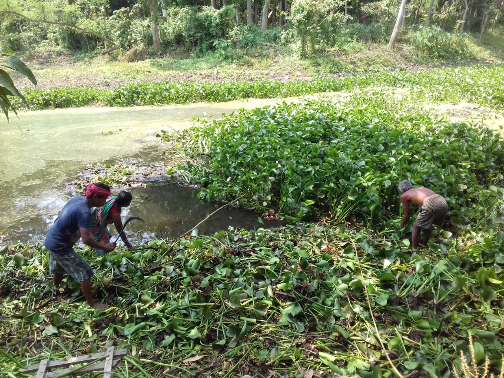

01 / The challengeChoked waterways.
Stalled livelihoods.
Invasive water hyacinth blocks freshwater bodies, worsens pollution, and threatens the health and income of communities living closest to the water.